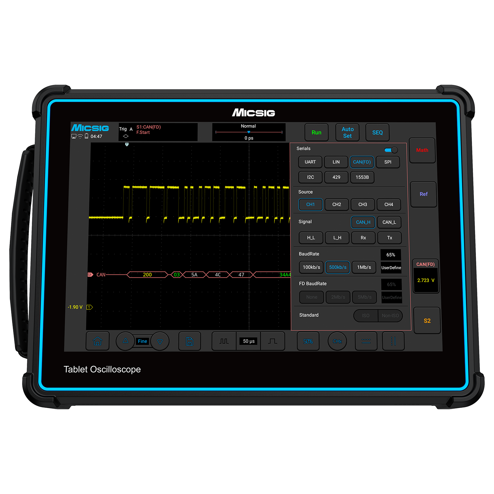

Micsig TO Oscilloscopes in India
Compare Micsig TO2004 tablet oscilloscope configurations in India, including suitcase and handbag kits. Contact Vianova for the best competitive offer.
Get the best competitive offer
TO oscilloscope models and specifications
Compare the exact Micsig model and included configuration against your measurement needs. Model specifications and supplied accessories can differ between standard, Master and kit versions; verify the selected suffix in the official product datasheet.
| Model | Specification | Our selling price (excl. GST) |
|---|---|---|
| TO2004 kit-Case | 10.1 in; 200 MHz; 4 CH; 2 GSa/s; suitcase | ₹112,164 |
| TO2004 kit-HB | 10.1 in; 200 MHz; 4 CH; 2 GSa/s; handbag | ₹107,484 |
| TO2004 | 10.1 in; 200 MHz; 4 CH; 220 Mpts; 1 GSa/s | ₹104,364 |
Prices shown are supplied by VIANOVA INDUSTRIAL SOLUTIONS, exclude GST and are subject to confirmation and availability. Contact us for the best competitive offer and a final quotation. No expiry date is stated.
Reach out for the best competitive offer Open official Micsig TO datasheet →
How to choose a Micsig TO oscilloscope
Start with the signal bandwidth, number of channels, sample rate, memory depth and resolution required for the application. Also check display format, battery configuration, included accessories, available software functions and probe compatibility. Use the official datasheet to confirm all model-specific details before ordering.
Buy Micsig TO oscilloscope in India
VIANOVA INDUSTRIAL SOLUTIONS is an authorised Micsig distributor for India. Contact our Ghaziabad team with your required model or application to confirm availability, GST and the best competitive offer.
+91 9205028508 · sales@vianovaindustrial.solutions
Request a Micsig TO quotation
Share your model, configuration and application for a competitive offer.
Micsig is a brand of its respective owner. Confirm model configuration, specifications, price and availability with VIANOVA INDUSTRIAL SOLUTIONS before purchase.